Background
고객의 목적이 연결되도록 분산된 통신 앱을 하나로 통합합니다
통신 서비스의 고객 경험은 플랫폼 단위로 나뉘어 있습니다. 분절된 서비스 경험을 한 곳으로 모아 사용자의 업무가 채널 사이에서 끊기지 않도록 하기 위해 이 프로젝트를 진행했습니다.
사용자가 통신 업무를 수행하는 채널은 앱, 웹, 고객센터, 문자, 매장 등으로 분산되어 필요한 업무에 따라 각 플랫폼의 역할이 구분된 상황이었습니다. 한편 통신 산업은 CS·판매·멤버십으로 분산된 서비스를 하나로 통합해, 고객의 탐색 부담을 줄이고 필요한 정보를 즉시 제공하는 방향으로 움직이고 있습니다.
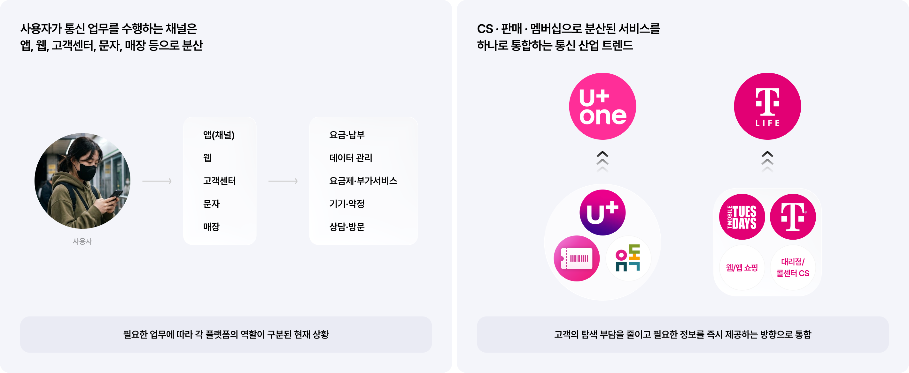
UX Research 1
고객은 원하는 메뉴를 빠르고 정확하게 찾지 못합니다
외부 고객 700명을 대상으로 CS 개선을 위한 고객 조사를 진행했습니다(2026년 4월 17일 – 5월 7일). 사용자는 원하는 업무를 홈에서 찾지 못하고, 메뉴에서는 업무를 찾기 위해 항목을 하나씩 눌러 탐색하는 불편함이 있었습니다.
고객의 29.3%가 업무 처리와 정보 조회 과정에서 어려움을 경험했고, 이유로는 내가 찾는 서비스·정보·메뉴가 어디 있는지 찾기 힘듦(44.9%), 메뉴의 단계가 많아 클릭 횟수와 화면 이동이 많음(36.6%)이 꼽혔습니다. 관리앱 홈 탭의 불필요한 퀵메뉴 강조와 한눈에 알아보기 어려운 메뉴 구조가 원인이었습니다.
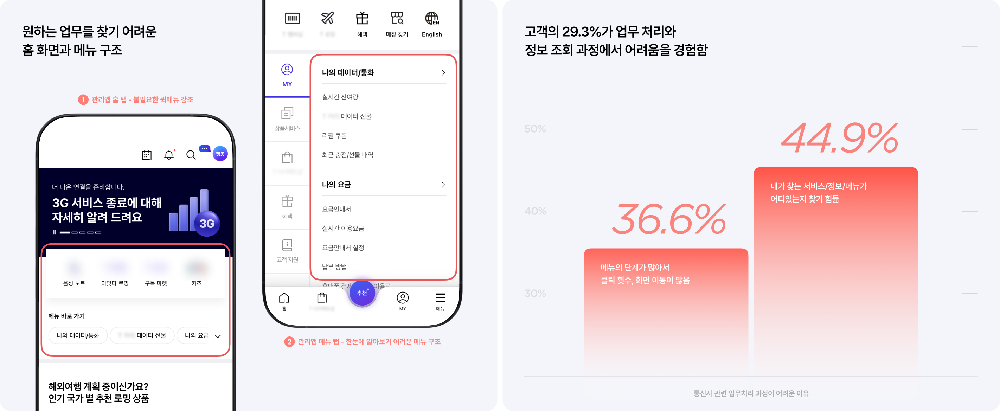
Solution Summary 1
현재 상태와 관련된 업무를 보여주면 필요한 업무에 빠르게 도달할 것이다
당사 고객 2,000명을 대상으로 NEXT 채널 설계를 위한 조사를 진행했습니다(2026년 2월 25일 – 27일). 사용자는 원하는 메뉴를 빠르게 찾을 수 있는 홈 구조를 원했습니다. 메인 화면을 원하는 서비스·정보로 이동하기 위한 연결 공간으로 인식하는 응답이 47.9%, 원하는 업무 메뉴로의 빠른 연결을 기대하는 응답이 57.1%였습니다.
이를 바탕으로 세 가지 방향을 세웠습니다. 메인 화면에서 고객이 찾는 일로 바로 안내하고, 유연한 GNB로 Agent 경험과 탐색 경험을 연결하며, 탐색은 필요한 정보부터 보고 관심에 따라 확장되도록 합니다.
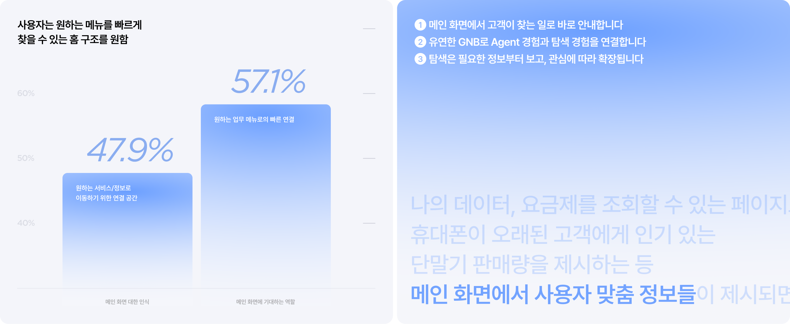
Solution 1-1
홈에서 지금 필요한 업무를 먼저 보여줍니다
최근 행동과 현재 상태를 바탕으로 지금 필요한 업무를 홈에서 먼저 제안했습니다. 사용자는 메뉴를 찾지 않고 추천 과업이나 질문을 통해 바로 업무를 시작할 수 있습니다.
1차 이터레이션에서는 LLM 대화형 구조로 AI가 미리 알려주는 방식이 유용하다는 반응(34.5%)과 함께 가로 스와이프 사용성에 대한 불편(27.8%)이 확인되었습니다. 2차에서는 긍정적인 UX 라이팅으로 가까운 목표에 시선을 집중시키고, 수행할 태스크를 CTA로 노출해 업무 진입으로 유도했습니다. UT에서 행동 흐름의 명확성은 기존 앱 2.7점에서 3.9점으로 개선되었습니다.
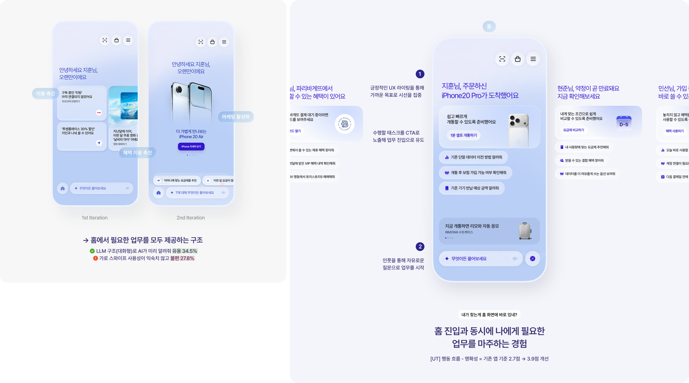
Solution 1-2
탐색 중에도 Agent를 호출하고, 기존 흐름으로 자연스럽게 돌아갑니다
GNB에 Agent 진입점을 상시 제공해 탐색 중에도 필요한 업무를 바로 시작할 수 있게 했습니다. 업무 처리 후에는 기존 화면으로 복귀하도록 연결해 사용자의 탐색 맥락을 유지했습니다.
세 차례 이터레이션을 거쳐 평범한 GNB와 Agent를 결합했습니다. LLM 대화창과 GNB가 함께 펼쳐지는 구조를 제공해, 직접 탐색을 원하는 고객이 자연스럽게 GNB로 전환할 수 있도록 설계했습니다. UT에서 행동 흐름의 예측 가능성은 2.8점에서 3.7점으로 개선되었습니다.
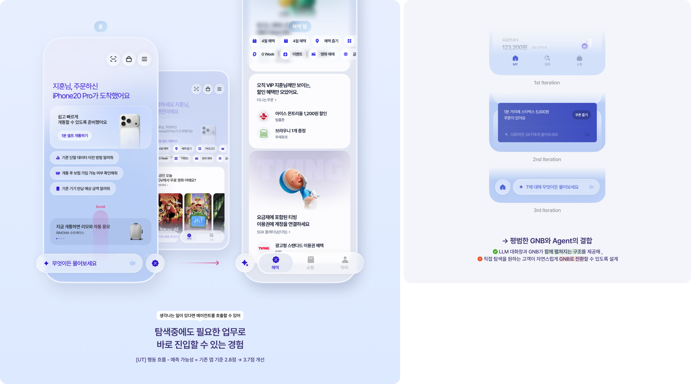
Solution 1-3
필요한 정보는 먼저 보고, 더 필요한 내용만 확장합니다
자주 확인하는 핵심 정보를 카드 단위로 묶고, 필요한 내용만 선택적으로 확장하도록 구성했습니다. 반복 조회는 빠르게, 추가 탐색은 자연스럽게 이어지도록 정보의 우선순위와 밀도를 조절했습니다.
1차에서는 한 화면에 보이는 정보가 사용자에게 유용하지 않았습니다. 카드 콘텐츠의 상세 정보를 미리 볼 수 있어 효율적이었지만, 하나의 그룹에 여러 상품을 노출하는 리스트 타입은 비효율적이었습니다. 이를 반영해 혜택·쇼핑·마이 탭에서 핵심 정보만 카드에 모아 한눈에 보고 바로 선택할 수 있게 하고, 조회 빈도가 높은 정보는 집약적인 카드 형태로 제공했습니다. UT에서 과업 용이성은 2.9점에서 3.8점으로 개선되었습니다.
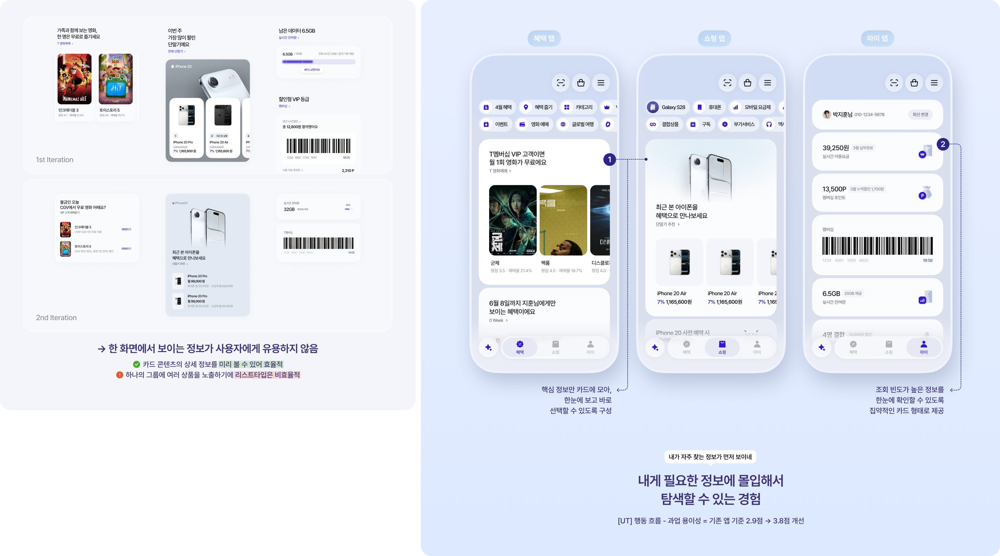
UX Research 2
업무 처리 과정이 끊기면 이탈하거나 포기합니다
요금 납부, 자동 납부 신청과 같은 주요 업무에서 사용자는 복잡한 정보 이해, 인증 과정 때문에 업무 처리 실패를 경험합니다. 단순 조회 및 탐색 업무의 실패 비율이 36.6%로 가장 높았고, 관리 앱 내 업무 처리 과정 실패율은 47.3%였습니다.
업무 처리에 실패하면 다른 채널로 이동합니다. 해지 신청 실패 시 고객센터 전화로 이동하는 비율이 49.8%로, T월드앱 고객지원 페이지 접속(17%)이나 모바일·홈페이지 내 챗봇 이용(8.5%)보다 압도적으로 높았습니다.
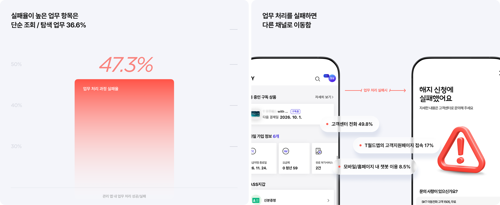
Solution Summary 2
AI가 현재 화면의 맥락을 이어받는다면 업무를 쉽게 처리할 수 있을 것이다
사용자는 상황에 맞는 AI 추천을 바탕으로 자연스럽게 다음 행동까지 이어지는 경험을 선호합니다. AI가 상황에 맞게 추천해 주면 참고하겠다는 응답이 49.1%였고, "AI 추천은 좋지만 낭비 없이 나의 편의를 도와줬으면 좋겠다, 최종 결정은 결국 사람이 해야 한다"는 목소리가 함께 나왔습니다.
두 가지 원칙을 세웠습니다. 현재 화면의 맥락을 이어 질문으로 업무를 시작하고, AI는 처리 과정을 보여주되 최종 결정은 사용자가 합니다.
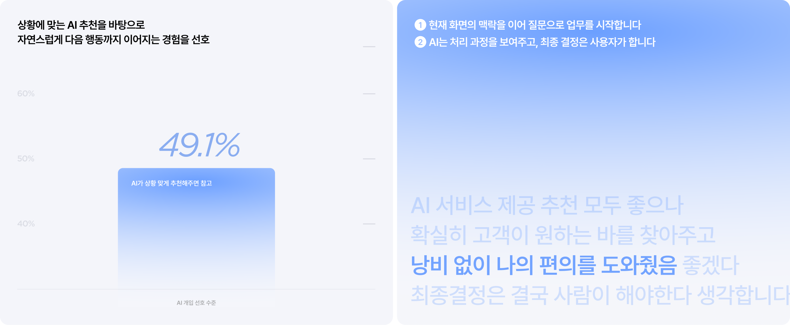
Solution 2-1
현재 화면의 맥락을 이어 질문으로 업무를 시작합니다
현재 화면과 관련된 업무를 선택지로 먼저 제안하고, 사용자는 추가 탐색 없이 자연어로 필요한 일을 요청할 수 있습니다. 질문이 구체화되면 Agent가 실제 처리 단계로 이어지도록 설계했습니다.
이터레이션에서 사용자는 기존 화면의 맥락을 유지한 AI 진입 방식을 선호했습니다. 현재 화면을 유지한 채 AI 대화로 이어지는 방식에 높은 선호를 보였고, 화면 전환으로 기존 맥락이 끊기거나 정보가 사라지는 방식은 비선호했습니다. "GPT처럼 물어봐도 되겠다"는 반응처럼 자유로운 질문으로 시작하는 통신 업무 경험을 만들었고, UT에서 AI·개인화 신뢰도는 2.1점에서 3.2점으로 개선되었습니다.
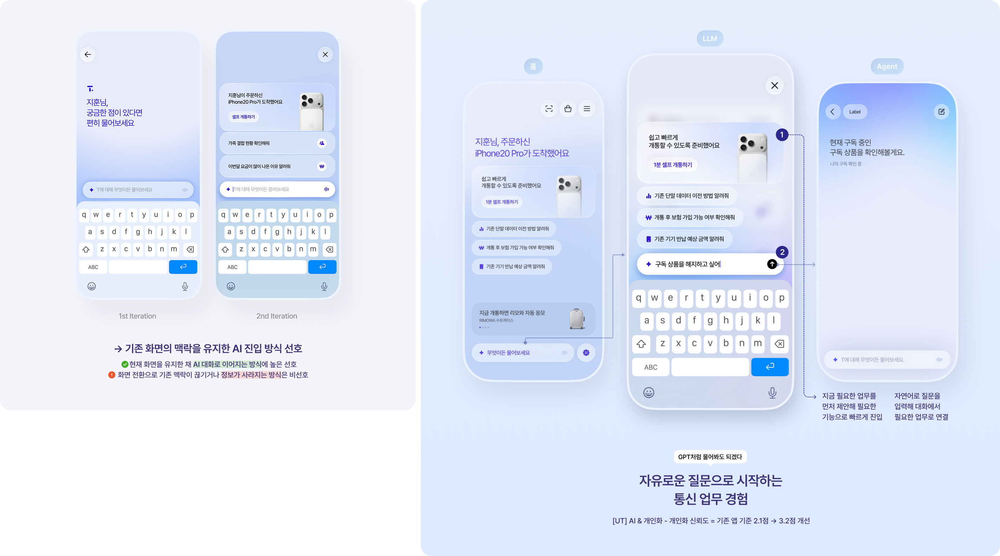
Solution 2-2
AI는 처리 과정을 보여주고, 최종 결정은 사용자가 합니다
AI가 필요한 정보를 확인하고 단계별 처리 과정을 안내하되, 해지·결제처럼 중요한 결정은 사용자가 직접 선택하도록 설계했습니다. 자동화의 편의성을 높이면서도 사용자가 업무를 통제할 수 있도록 했습니다.
네 가지 원칙으로 정리했습니다. 입력창은 작게 선택창은 크게 두어 사용자가 텍스트 입력이 아닌 선택으로 결과를 비교하며 결정하고, 업무 처리 기점을 답변에 따라 구분해 선택한 결과에 따라 즉각 필요한 절차를 진행합니다. 사용자가 태스크를 통제할 수 있어 안정감을 주고, 결정에 따른 태스크의 단계적 처리를 완료·진행·대기 순으로 투명하게 시각화했습니다.
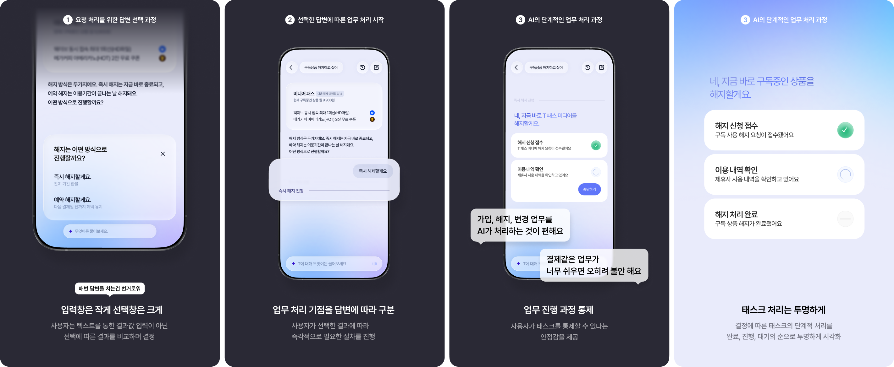
Project Result
핵심 화면과 4가지 주요 시나리오의 사용성 수행을 통한 UX 검증 성과
디자인 컨셉부터 AI Agent 연속 업무 프로세스까지 아이디어를 내고 프로토타입으로 제안하여, AI Agent 사용성 제안이 메인 시안으로 채택되어 서비스 구축까지 진행하고 있습니다. "굳이 메뉴를 검색하지 않아도 말로 해서 바로바로 연동시켜주는 인터페이스", "1:1 문의 없이 혼자 해결 가능해 콜센터 전화를 줄 것"이라는 답변이 반복 확인되었습니다.
외부 고객 24명을 대상으로 한 UT(2026년 6월 15일 – 19일)에서 기존 앱 대비 "하나로 통합 + 간결한 구성 + 즉시 도달"이라는 일관된 호평으로 신규 컨셉의 사용성을 긍정적으로 평가했습니다. AI·개인화 파트 전 그룹 SUS 87~95점, 플로우 체감 평가 4.0~5.0점을 기록했고, 재확인·인증·취소·되돌리기 장치 같은 의도적 마찰이 필요하다는 개선점도 확인했습니다.
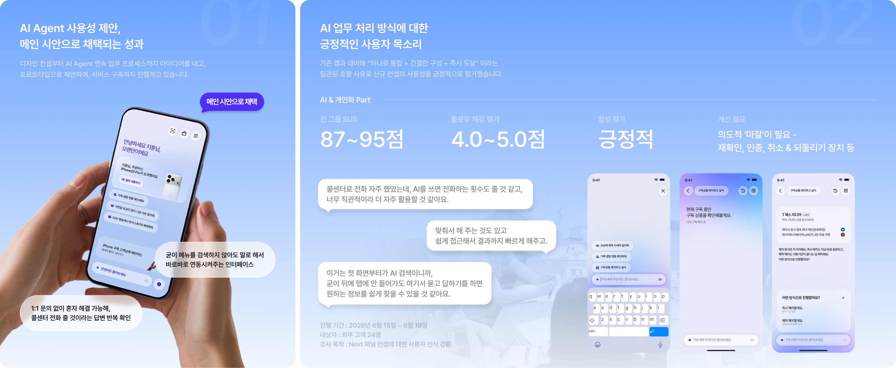
Appendix
화면마다 반복되는 설계 판단을, AI도 참조할 수 있는 시스템으로 구조화
요금·멤버십·혜택·쇼핑·상담 화면이 같은 원칙으로 조합되도록 토큰과 컴포넌트, 상태·속성 규칙을 체계화했습니다. Figma와 Storybook을 연결해 화면 맥락별 사용 조건과 적용 가이드를 하나의 기준으로 관리했습니다.
Core·Domain 컴포넌트는 설계 요건에 따른 데이터값을 받아올 수 있는 체제로 피그마 안에서 속성값을 생성하고 액션 이벤트를 핸들링할 수 있는 터치 영역을 정의했습니다. Primitive → Semantic → Component 토큰을 계층화해 AI 설계 워크플로우에 적용할 수 있는 거버넌스 문서를 만들었고, Claude Code로 디자이너가 직접 단일 원천 소스(SSOT)를 웹사이트로 구현해 피그마 화면이 실제 제품에서 어떻게 구현되는지 이해하고 마지막 디테일을 높이는 작업으로 확장했습니다.
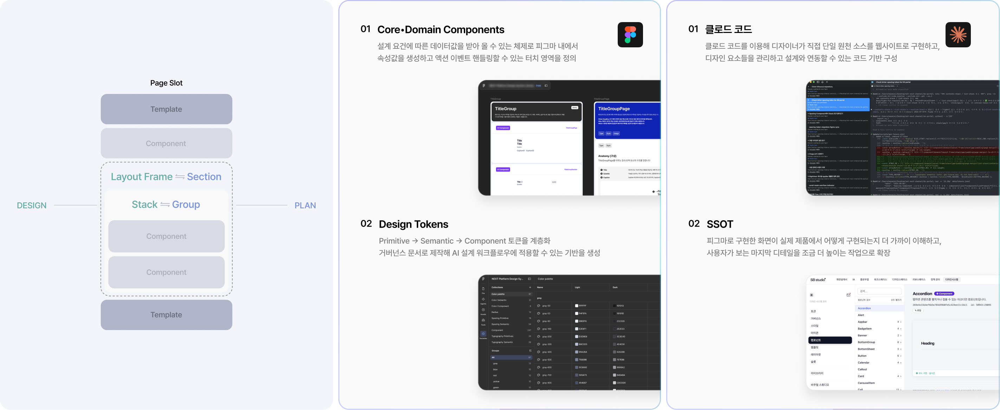